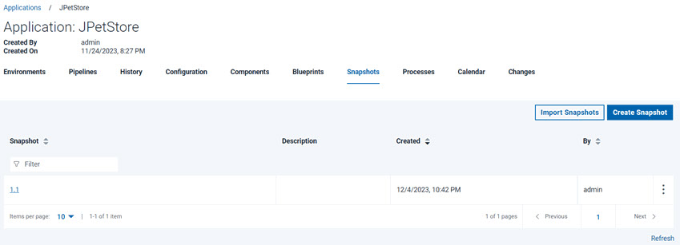

Creating a snapshot involves saving a collection of component versions that are part of
an application.
About this task
These steps describe how to create a snapshot that uses components of the sample
application. In the Deploying a simple web application tutorial, you deployed the JPetStore
application twice to the same environment. In the second deployment, you used two components that
contain new information. In this lesson, you create a snapshot that uses the same components as the
deployed environment. You create a snapshot from a functioning development environment in
preparation for deployment to the next phase of your continuous delivery pipeline. In a later
lesson, you deploy this snapshot to a new environment. By deploying with snapshots in Deploy, you can
quickly bring a new environment to a specific state.
Procedure
-
Click the Applications tab, and then click
JPetStore.
-
In the same row as your environment, click the Create Snapshot icon, as shown in the following figure:
-
In the Create Snapshot window, specify the name to be Version
1.1.
-
Accept the default values in the other field, and then click Save.
-
Click the Component Versions tab.
The snapshot is shown as in the following image.
The JPetStore-DB component uses
incremental versions and must contain both the
1.0 and
1.1 versions to deploy. If
the JPetStore-DB component
does not contain both versions, you must update the
component version. See Configuring the server and target system.
The
JPetStore-DB component uses incremental versions and must
contain both the
1.0 and
1.1 versions to deploy. If
the
JPetStore-DB component does not
contain both versions, you must update the component
version. See
Configuring the server and target
system.
Results
In this lesson, you added a snapshot to the application. The snapshot is based on the
components in the application that are currently deployed to an environment.On the application's
Snapshots page, you have a snapshot, as shown in
the following figure:

In the next lesson, you create an environment to for the next step in the JPetStore
application's delivery pipeline.
What to do next
After you create a snapshot that describes a collection of components, you can deploy the
snapshots to an environment. In the next lesson, you create another environment.For more
information about creating snapshots, see Creating snapshots.